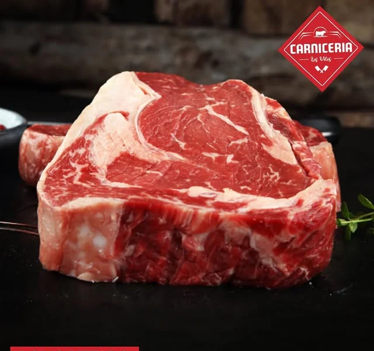
CORTES DE VACUNO
Lomo vetado
Una de las opciones que muestran para preparar a la parrilla.
En Avenida Caupolicán encuentras dos lugares hechos para acompañar lo cotidiano: carnes y alimentos para compartir; limpieza y cuidado para vivir mejor.
Descubre nuestros locales ↘Comercializadora Francisco Madariaga SpA reúne dos negocios de Los Vilos. En uno, encuentras cortes y productos para tu mesa. En el otro, todo para limpiar, cuidar y abastecer tu hogar.
Nos gusta recibirte cerca, ayudarte a encontrar lo que buscas y ser parte de la rutina de nuestra comunidad.
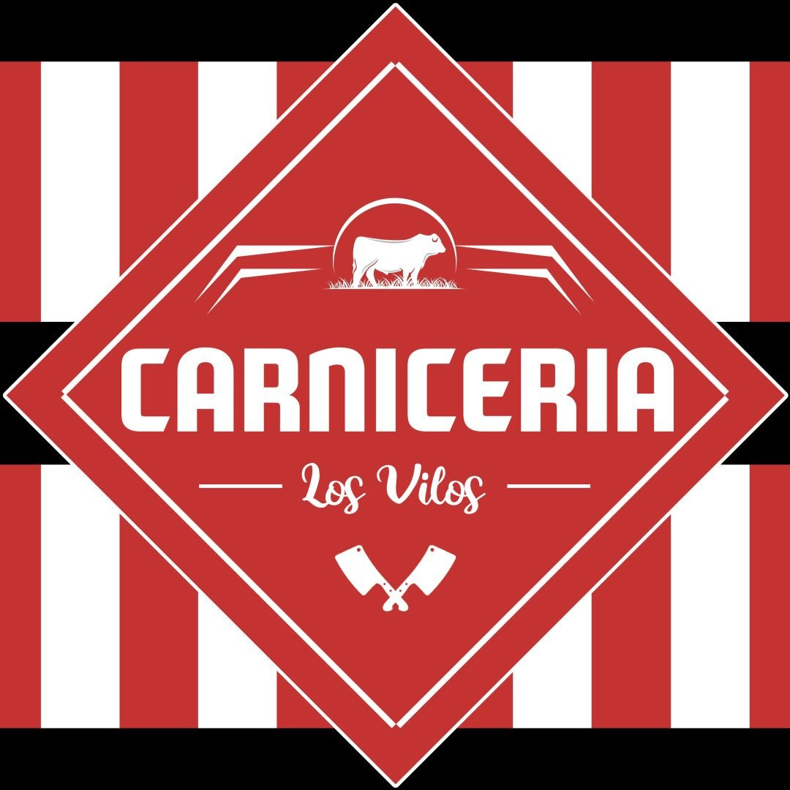
Carne fresca, cortes para la parrilla y productos para resolver el almuerzo de todos los días. Un local de barrio donde te esperan con atención cercana.
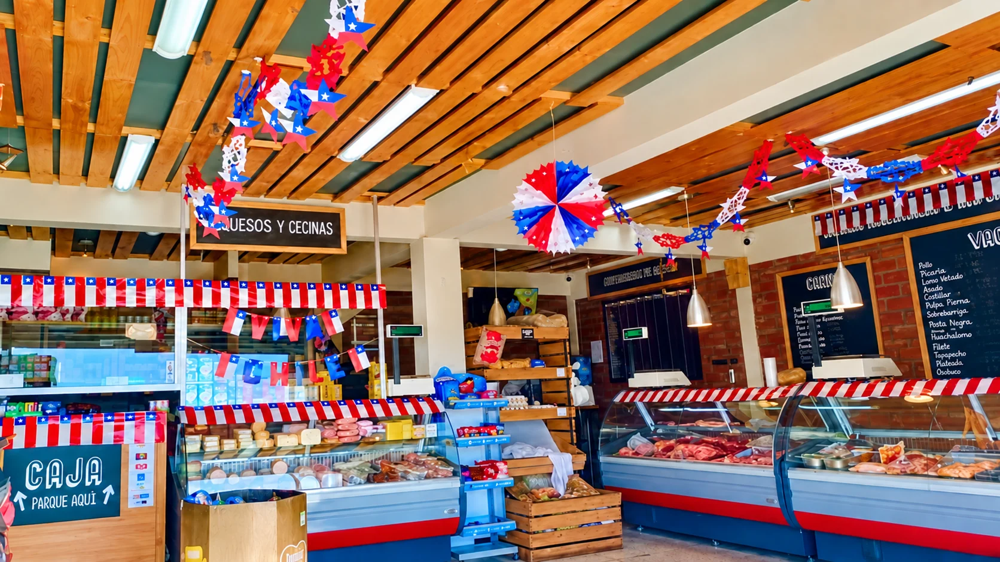
De la vitrina a tu mesa, con alternativas para cocinar, compartir y disfrutar.
AV. CAUPOLICÁN 980-C · LOS VILOSLa disponibilidad puede variar. Escríbenos para confirmar el corte o producto que buscas.

Una de las opciones que muestran para preparar a la parrilla.
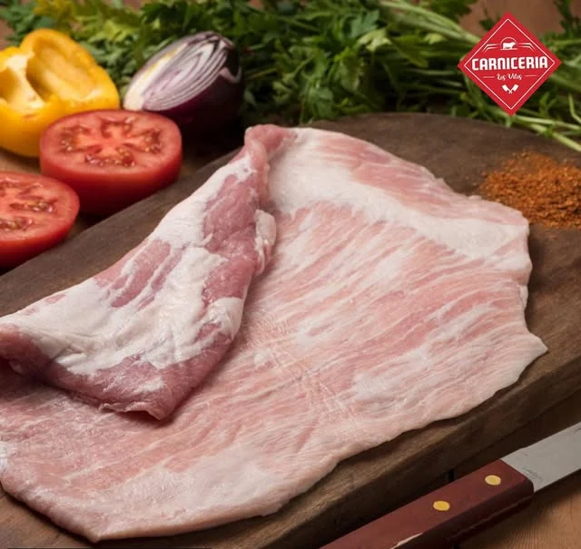
Un corte versátil para parrilla, cacerola o cazuela.
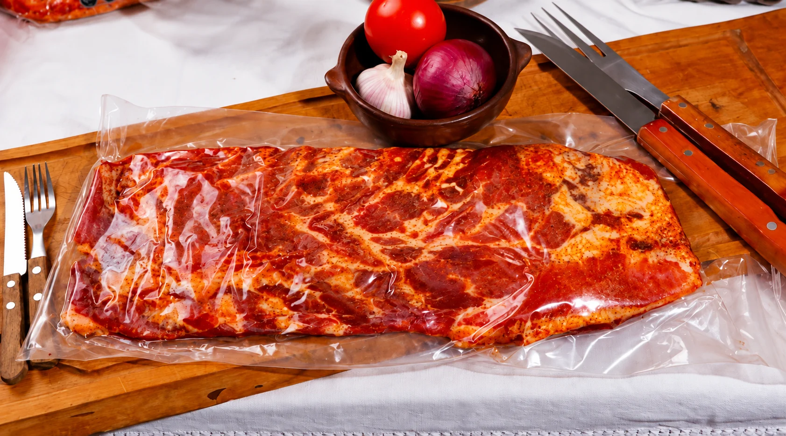
Una alternativa que han destacado para el asado.
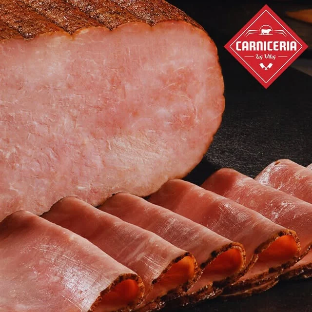
Cecinas, congelados, pollo, abarrotes y bebidas.
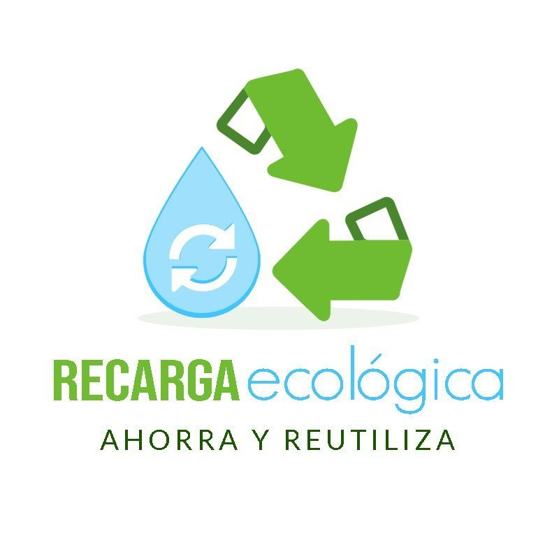
Productos de limpieza, perfumería y cuidado personal para tu día a día. Una tienda donde elegir bien también puede significar darle nueva vida a tus envases.
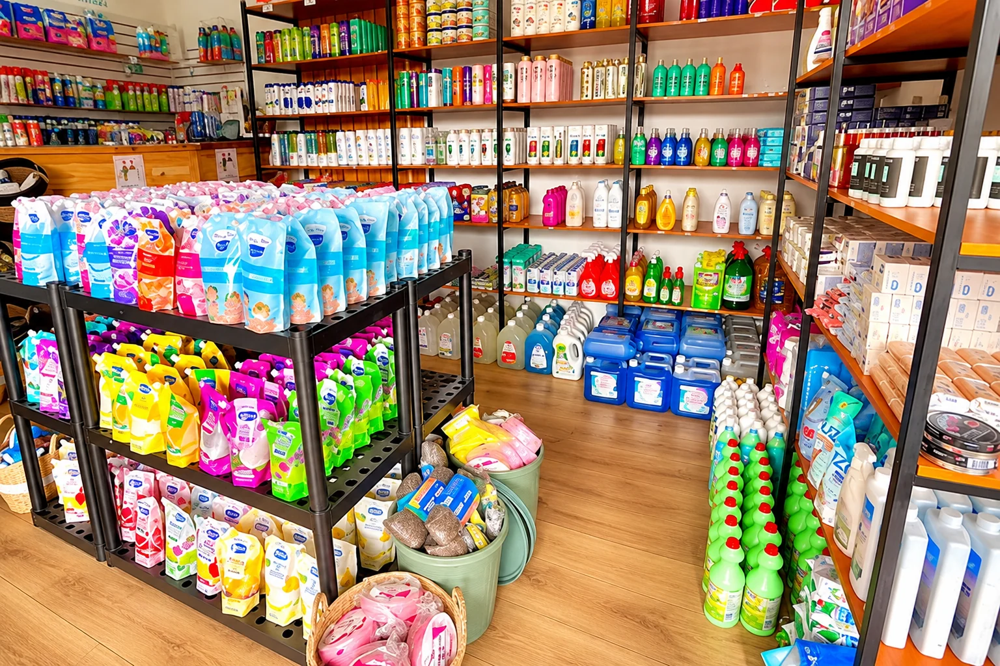
EN EL CORAZÓN DE LOS VILOSConsulta por formatos, aromas y disponibilidad directamente en tienda.
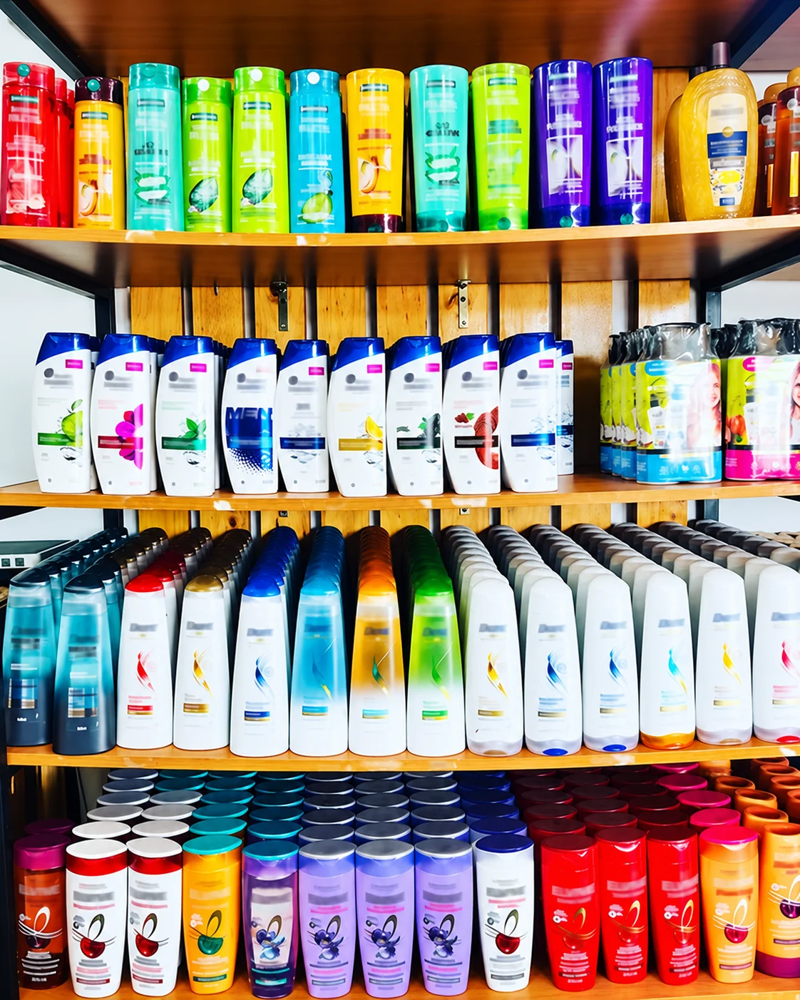
Opciones para el cuidado cotidiano de tus espacios.
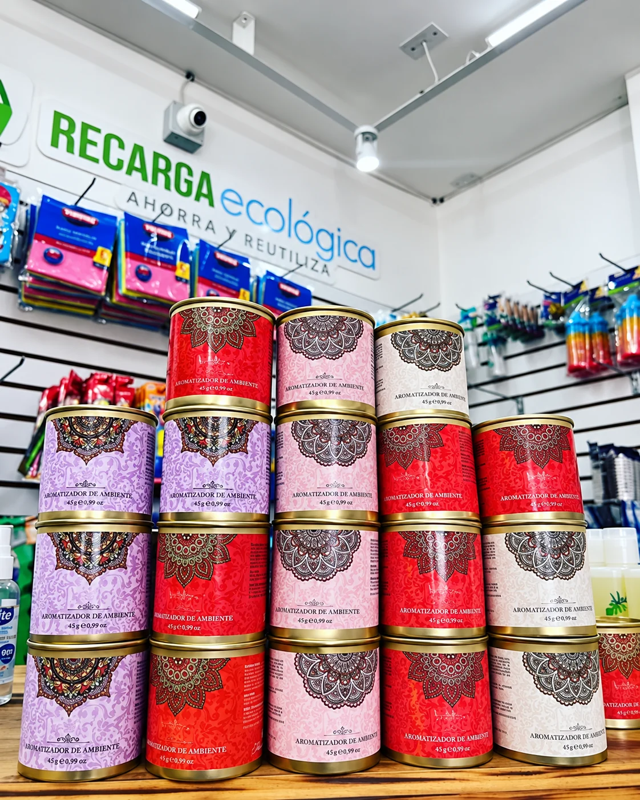
Encuentra aromas para el hogar, la oficina o tu local.
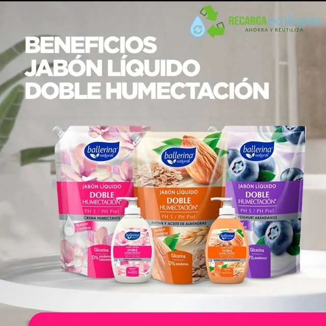
Productos de aseo personal, piel y cuidado capilar.
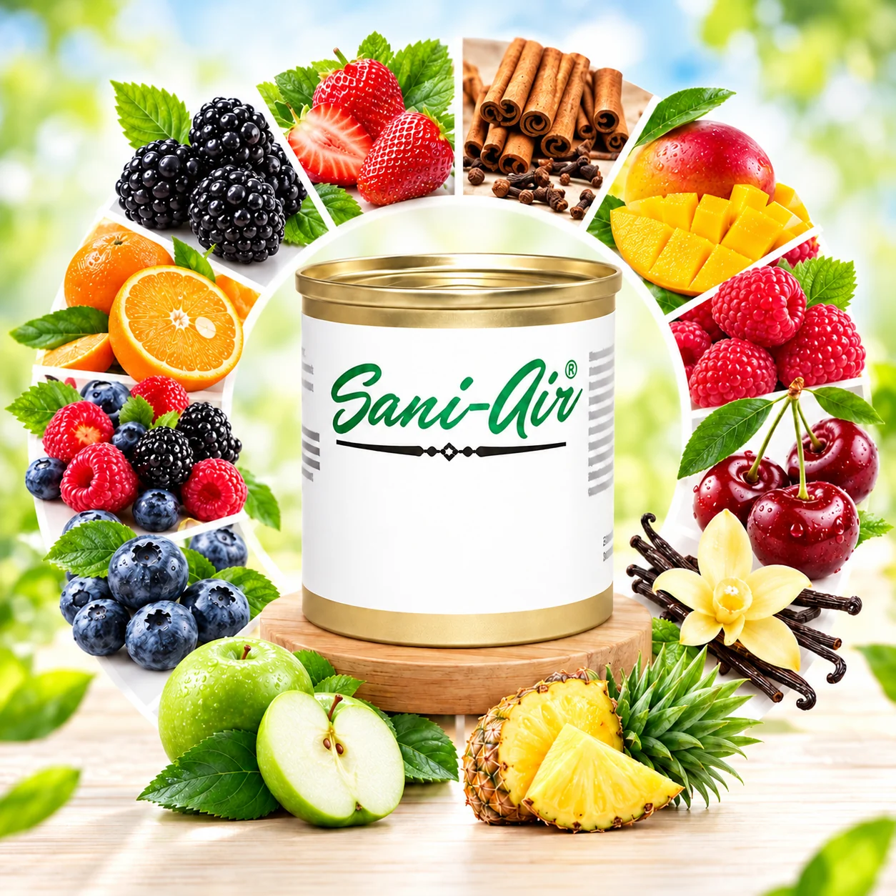
Variedad de aromas como frutilla, mango, piña y frutos rojos.
Una muestra de las marcas que aparecen en las publicaciones de nuestros locales. Consulta en tienda por disponibilidad actual.
Dos locales en el centro de Los Vilos, con todo lo que necesitas para tu mesa y tu hogar.
Av. Caupolicán 980-C
Los Vilos, Región de Coquimbo
Av. Caupolicán 500, esquina Rengo
Los Vilos, Región de Coquimbo
Cuéntanos qué necesitas y te ayudamos a encontrarlo en el local que corresponde.
+56 9 9438 9822 ↗